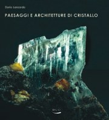
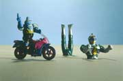

Mostre ed eventi

Paesaggi e architetture di cristallo
Fotografie di Dario Lanzardo
(Blu edizioni)
17 dicembre – 15 febbraio 2008
Lunedì 17 dicembre alle ore 18, inaugurazione della mostra e presentazione del relativo catalogo con la partecipazione dell’Assessore alla cultura della Regione Piemonte Gianni Oliva, la direzione del Museo e l’autore.
Pensata come supporto scenografico alla mostra Mineralia, in corso nei locali del Museo di Scienze Naturali di Torino, la sequenza di immagini che Dario Lanzardo espone negli stessi locali riprende e sviluppa alcuni temi già affrontanti nelle sue precedenti mostre organizzate dal Museo stesso, Arca Naturæ e Omaggio a Goethe, forme e colori di natura. Fotografando dettagli di pezzi scelti fra le collezioni museali, inquadrandoli da punti di vista insoliti, o con particolari tagli di luce, Lanzardo intende innanzi tutto richiamare l’attenzione sulla bellezza della natura, convinto che lo stupore indotto possa farci riflettere sulla necessità di non usare la materia costitutiva e irripetibile di questo nostro unico pianeta, come una qualunque merce prodotta dalla civiltà. Usando il linguaggio fotografico in chiave metaforica, per cui, ad esempio, un pezzetto di minerale ci appare nell’imponente, simbolica veste di una montagna, vuole ricordarci, con Goethe, come nel ‘piccolo’ ci sia già il ‘tutto’, come lo spirito della natura, la sua essenza, si possa cogliere in un granello di sabbia o in un fiocco di neve. Gli accostamenti fatti fra alcune immagini di cristalli e opere di grandi architetti o scrittori, evidenziano come la natura, per dirla con Gaudì, sia un ‘libro già stampato’ nelle cui pagine l’ingegno umano ha da sempre attinto regole e forme per le proprie costruzioni e, anche per questo, sia da conservare e proteggere come il più prezioso dei manoscritti.
Alle ore 19 dello stesso giorno, dopo un drink, inaugurazione della retro-illuminazione delle gigantografie dello stesso Lanzardo, ARCA NATURAE, che chiudono le 21 finestre del palazzo, lato piazzale Valdo Fusi, prevista dal programma Contemporary Arts Torino Piemonte ottobre-dicembre 2007.

Molti dei lavori citati, e altri, sono stati oggetto anche di una quarantina di esposizioni personali in gallerie, spazi pubblici e privati in Italia e all'estero, in particolare:
Palazzo Reale di Torino, Museo d'Arte di Filadelfia, Palazzo Broletto di Novara, Castello S.Giusto di Trieste, Grotte Baldini di Ferrara, Castel S.Angelo di Roma, Chiesa di S.Bernardino di Ivrea, Museo della Guerra di Rovereto, Museo dell'Automobile di Torino, La Mandria della Venaria Reale, Palazzo Cesi di Acquasparta, Museo di Scienze Naturali di Torino, Certosa di Pisa, Abbazia di Vezzolano di Asti, Palazzina delle Arti di La Spezia, Circolo degli Artisti a Torino.
L’ultima esposizione, alla Sala Bolaffi di Torino, sarà L’Eterno gioco del Doppio, Dario Lanzardo fotografo, a cura di Francesco Poli, a partire dall’8 settembre 2006.